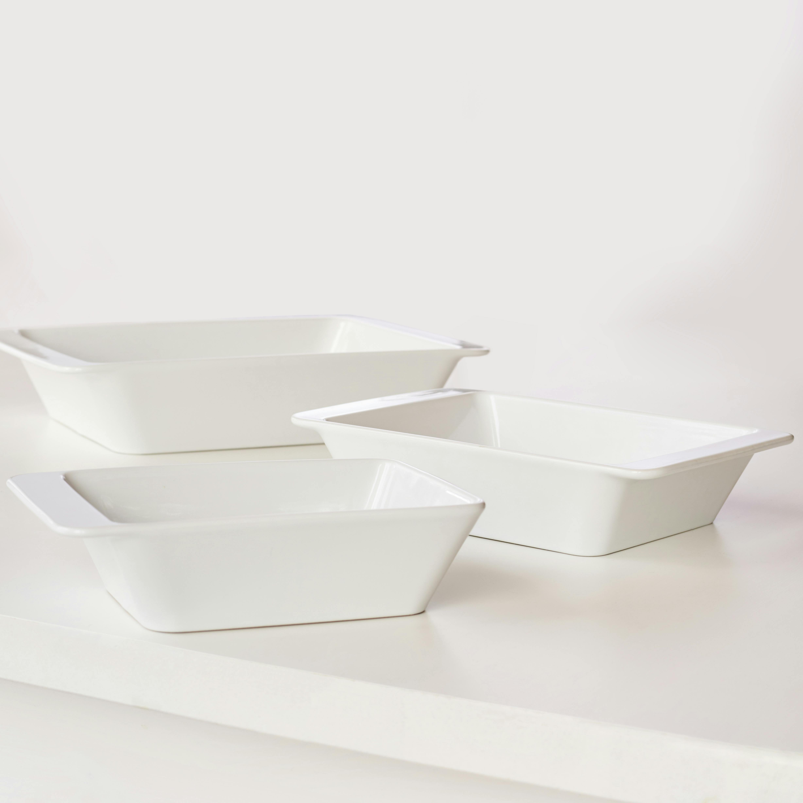
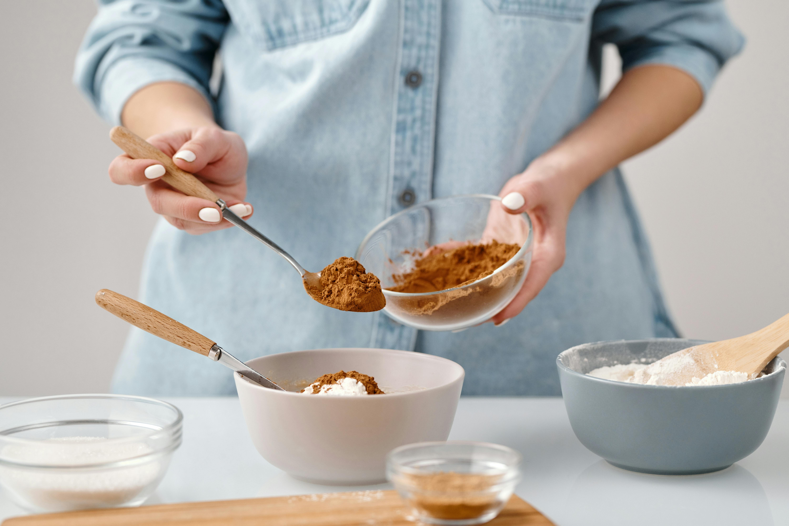
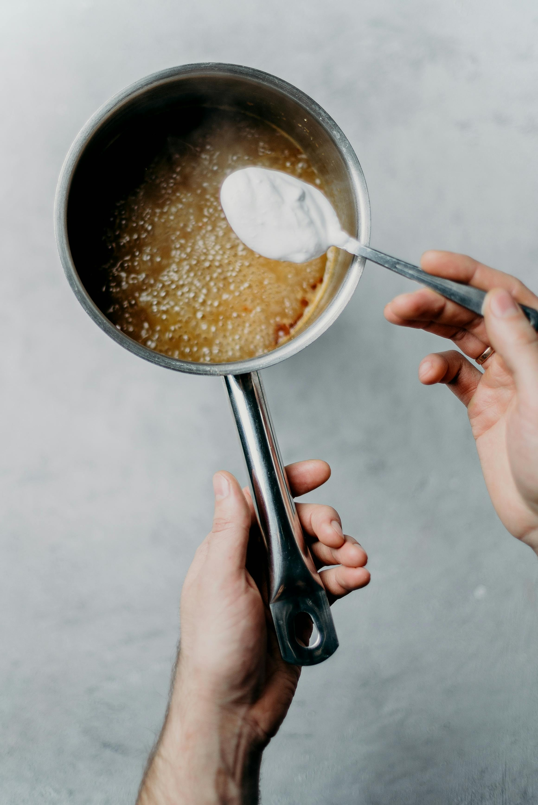
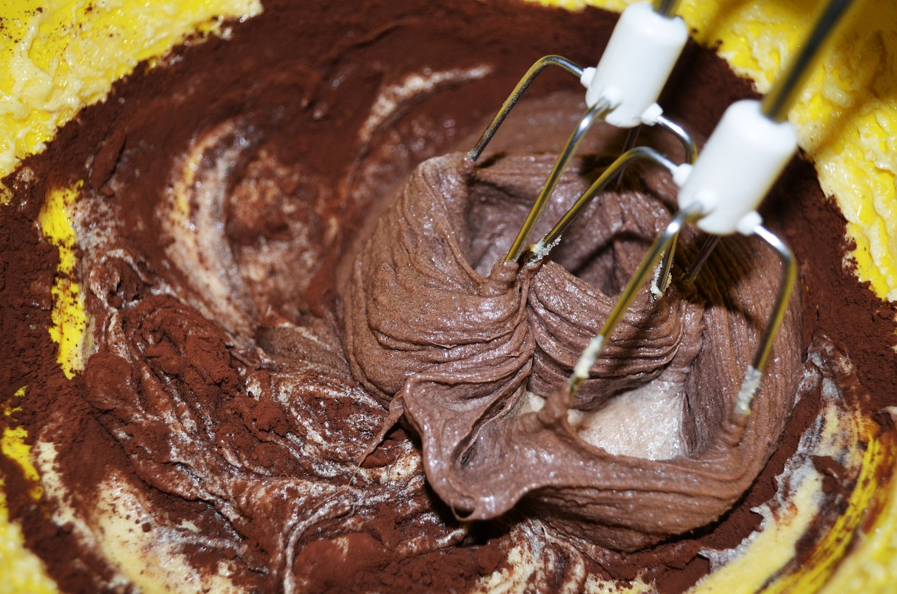

If you're craving something rich and chocolatey, you've come to the right place! This easy brownie recipe will guide you through making the perfect batch of fudgy brownies. Whether you're an experienced baker or just starting, these brownies are sure to impress your family and friends. Let's get started!
Ingredients
4 large eggs
1 1/4 cups (106g) Dutch-process cocoa
1 teaspoon table salt
1 teaspoon baking powder
1 teaspoon espresso powder (optional for enhanced flavor)
1 tablespoon Pure Vanilla Extract
16 tablespoons (227g) unsalted butter
2 1/4 cups (447g) granulated sugar
1 1/2 cups (180g) Unbleached All-Purpose Flour
2 cups (340g) chocolate chips
1. Preheat the Oven and Prepare the Pan

Greased brownie pan. Photo by Alexy Almond, February 17th, 2020. Source: Pexels.
Preheat the oven to 350°F. Lightly grease a 9" x 13" pan, and if you plan to turn the brownies out of the pan at once, line it with parchment paper and grease the parchment as well.
2. Mix Dry Ingredients

Mixing dry ingredients. Photo by Nicole Michalou, December 2nd, 2020. Source: Pexels.
In a bowl, combine cocoa, salt, baking powder, espresso powder, and vanilla. Set aside.
3. Melt Butter and Combine with Sugar

Melting butter and sugar mixture. Photo by cottonbro studio, November 28th, 2019. Source: Pexels.
In a medium-sized microwave-safe bowl or saucepan over low heat, melt the butter. Add the sugar and stir to combine until the mixture is hot (about 110°F to 120°F) but not bubbling, creating a shiny texture.
4. Combine Mixtures

Combining mixtures for brownies. Photo by PublicDomainPictures, February 28, 2012. Source: Pexels.
Crack the 4 eggs into a separate bowl and beat them at medium speed with the dry mixture until smooth. Add the hot butter/sugar mixture to the egg/cocoa mixture and stir until smooth. Then, add the flour and chocolate chips, stirring until well combined.
5. Bake and Store
Baked brownies in a pan. Photo by Dulce SILVAGNI, February 10, 2011. Source: Pexels.
Spoon the batter into the prepared pan and bake for 28 to 32 minutes until the edges feel set, and the center looks very moist but not uncooked. Cool on a rack before cutting into squares. Store any leftovers well-wrapped at room temperature for 5 to 6 days, or freeze for longer storage.
 Baked brownies in a pan. Photo by Dulce SILVAGNI, February 10, 2011. Source: Pexels.
Baked brownies in a pan. Photo by Dulce SILVAGNI, February 10, 2011. Source: Pexels.